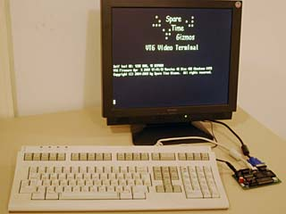
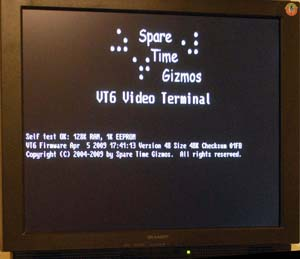
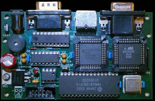

|
|
|
Overview
 The Spare Time Gizmos' Video Terminal project is a family of general purpose video display terminals. They communicate with a host computer using standard RS-232 ASCII communications and accept ANSI standard escape sequences. The VT terminals use any standard IBM PC compatible VGA display as a monitor and an IBM PC PS/2 style keyboard for input.The VT family terminals are perfect for use with any computer that requires a serial console, especially those of the classic variety. It works with the Spare Time Gizmos SBC6120 and Elf 2000 kits, as well as any VAX, PDP-11, S-100, or other vintage machine that you might have. Since the VT family has near perfect emulation of the DEC VT220 terminal, it works with any vintage software that you might have, including EDT or emacs. As of this writing
there are three members of the Spare Time Gizmos VT family.
FeaturesAll of VT family terminal do pretty much everything a VT220 can do, plus several extensions. Here's just a partial list of the features -
Firmware
 The firmware for the VT family is an open source community development effort and a Source Forge project has been set up for the VT firmware at http://vt4.SourceForge.net. The firmware is written in C and is compiled using the free, open source SDCC compiler. The other tools we're using are Programmer's Notepad and GNU Make, both of which are also free, open source, tools. New firmware can be downloaded to VT microprocessor, while it's installed in the terminal, using an ordinary PC and a serial connection to the terminal. No special programming hardware is required to update the MCU firmware and all the development tools used are free. Lack of money or equipment shouldn't keep anybody from participating.
Hardware
 The VT family terminals contain two independent microprocessors, a primary MCU which does most of the work including generating the video, and a secondary APU which interfaces to the PS/2 keyboard and handles other miscellaneous housekeeping tasks. Some people may raise their eyebrows at the idea of a second CPU, but the part costs approximately $2 and offloads the main CPU firmware (and therefore the firmware programmer!) of any critical timing issues in bit banging the PS/2 serial keyboard protocol. Its well worth the investment.The video generation is done by a combination of hardware and firmware. The hardware generates the basic horizontal timing, and the firmware is responsible for transferring bytes from the frame buffer to the hardware video shift register, which is then shifted out serially to drive the VGA display. The VGA bitmap requires approximately 30K bytes of RAM, which is far more than the internal memory of the microprocessor, so all VT models provide for 128K or 512K bytes of external SRAM. Since the maximum address space of the MCU is 64K bytes, the hardware implements a simple memory management scheme to extend the addressing abilities of the MCU.
FutureWith lots of memory and approximately a 30MIPs processor at our disposal, there's a lot more that could be done with the VT terminals beyond simply emulating a VT220. Here's just a few of the ideas that have been discussed -
Ordering
Free counters provided by Andale. |
Visit these Spare Time Gizmos
|